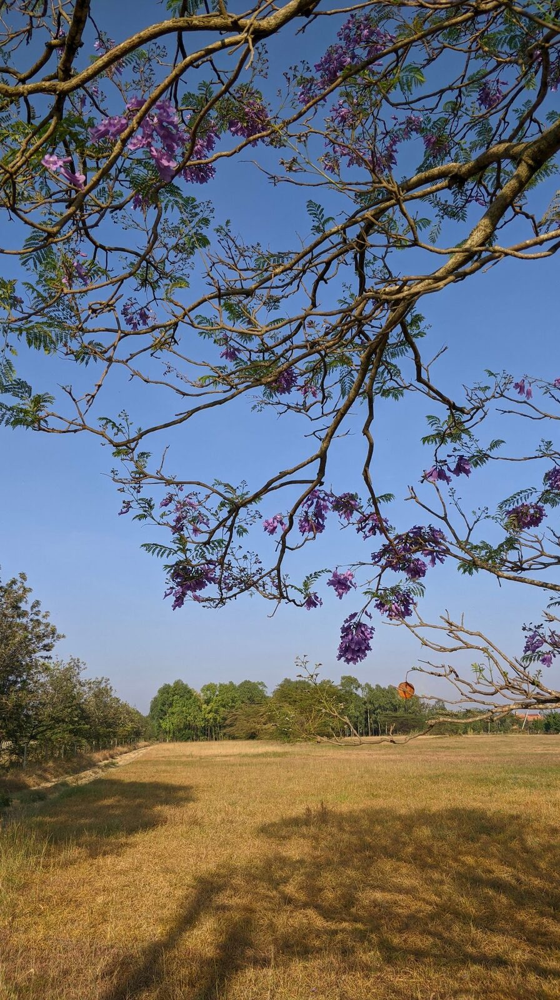
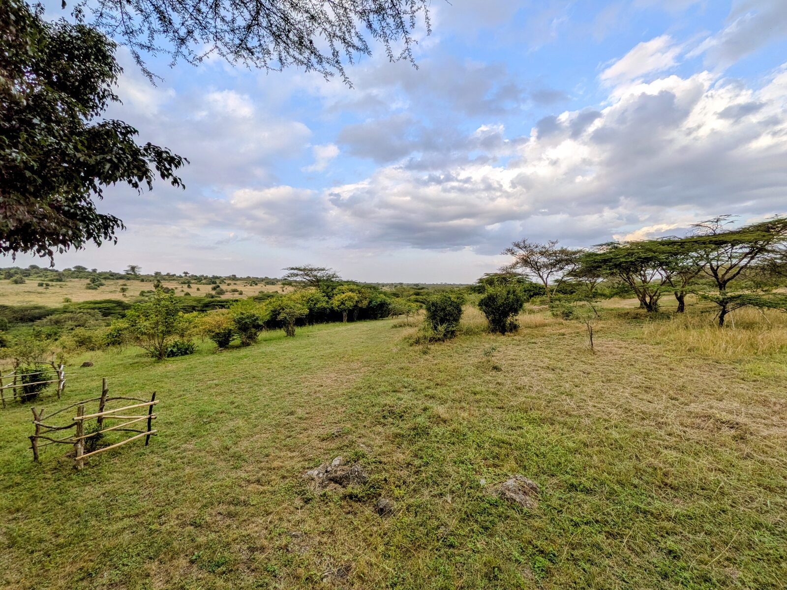
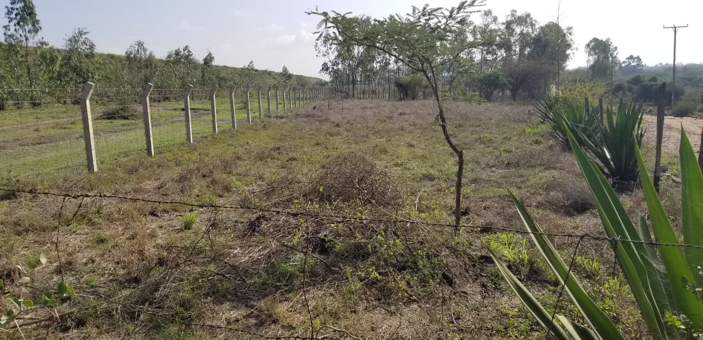

All three parcels sit within a few kilometres of each other, 10km from Ongata Rongai, near Kitengela Glass Studio. Between them: open pasture, a river frontage facing the park, and a main-road plot on the Ongata Rongai–Kitengela route. Each is offered separately below.

Ideal for institutional or residential development — a working farm across two titles, mostly open pasture with eucalyptus stands and a former hydroponic greenhouse operation. Level, well-drained land sheltered by the SGR embankment, with three-phase power, a borehole, and staff housing already in place.

Virgin land with indigenous vegetation on the Mbagathi River, directly facing Nairobi National Park, with free-ranging wildlife. One freehold title, roughly 1km from Kitengela Glass Studio. Suited to a secluded private residence or a small hospitality establishment.

Half-acre plot fronting the Ongata Rongai–Kitengela road, near the SGR underpass. Road is earmarked for surfacing, giving through-access to Kitengela, Athi River, and Mombasa Road. Ideal location for a supermarket, petrol station, or similar establishment given its position on the main road and the rapid development growth in the area.